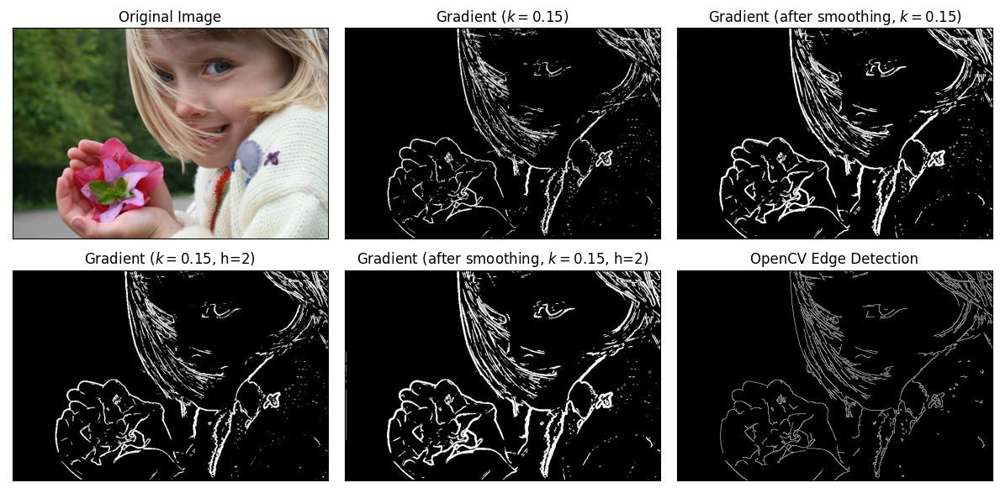
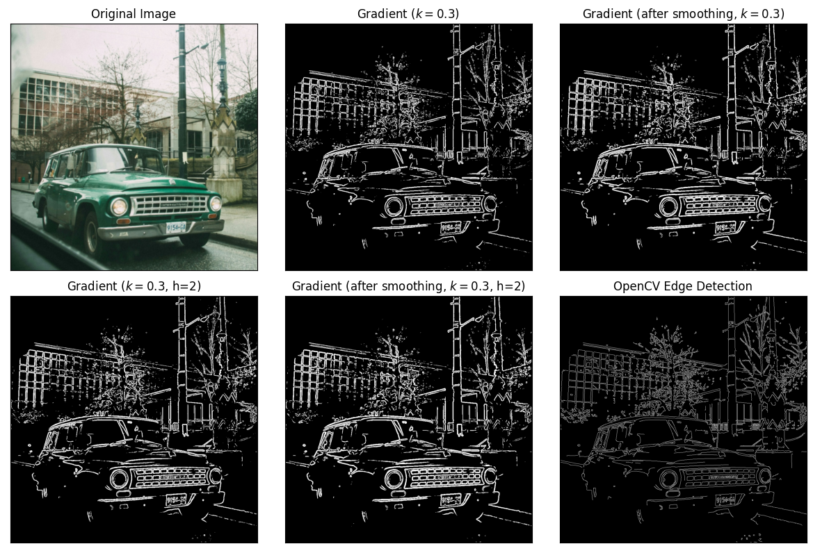
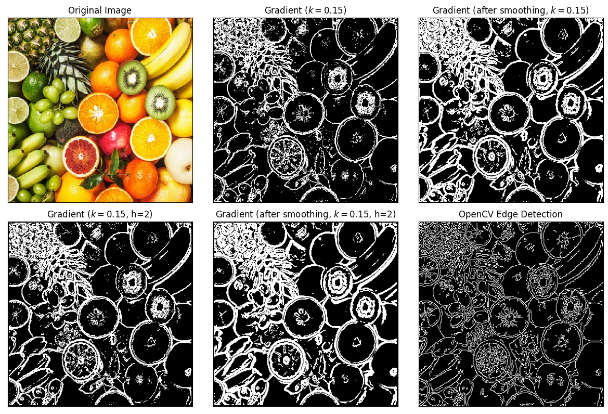

import matplotlib.image as mpimg
import numpy as np
import matplotlib.pyplot as plt
import cv2 as cv
RGB to Grayscale Conversion#
Using the formula $\( G = 0.3r + 0.59g + 0.11b \)$
def rgb2gray(rgb):
return np.dot(rgb[...,:3], [0.3, 0.59, 0.11])
Image Smoothing#
Linear smoothing which averages the pixel count with all 9 of its neighbours.
def smoothen(img, file=False):
if file:
img = mpimg.imread(img)
img = rgb2gray(img)
n = img.shape
smooth = img.copy()
# we ignore the edges as they are just 1 pixel
for x in range(1, n[0]-1):
for y in range(n[1]-1):
smooth[x,y] = (img[x,y]+img[x-1,y]+img[x+1,y]+\
img[x,y-1]+img[x-1,y-1]+img[x+1,y-1]+\
img[x,y+1]+img[x-1,y+1]+img[x+1,y+1])/9
return smooth
Calculate Derivatives#
def nablaG(G,x,y,h=1):
delx = (G[x+h,y]-G[x-h,y])/(2*h)
dely = (G[x,y+h]-G[x,y-h])/(2*h)
return (delx, dely)
def gradient(img):
n = img.shape
img = rgb2gray(img)
grad = np.zeros((img.shape[0], img.shape[1]), dtype=float)
for x in range(1, img.shape[0]-1):
for y in range(1, img.shape[1]-1):
g = nablaG(img, x, y)
grad[x, y] = np.sqrt(g[0]**2+g[1]**2)
return grad
def hessian(img, h=1):
n = img.shape
img = rgb2gray(img)
hess = np.zeros((img.shape[0], img.shape[1]), dtype=float)
for x in range(1, img.shape[0]-1):
for y in range(1, img.shape[1]-1):
hess[x, y] = img[x+h, y+h] + img[x-h, y-h] - img[x+h, y-h] - img[x-h, y+h]
return hess[1:-1, 1:-1]
def detect_edges(file):
img = mpimg.imread(file)
gray = rgb2gray(img)
gradG = gradient(gray)
hess = hessian(gray)
# plt.imshow(gradG, cmap=plt.get_cmap('turbo'))
return gradG, hess
def nablaG(G,x,y,h=1):
if h == 1:
delx = (G[x+1,y]-G[x-1,y])/2
dely = (G[x,y+1]-G[x,y-1])/2
elif h == 2:
delx = (2*G[x+1,y]+G[x+2,y]-2*G[x-1,y]-G[x-2,y])/8
dely = (2*G[x,y+1]+G[x,y+2]-2*G[x,y-1]-G[x,y-2])/8
else:
return (0, 0)
return (delx, dely)
def gradient(img, h=1, file=False):
if file:
img = mpimg.imread(img)
img = rgb2gray(img)
n = img.shape
grad = np.zeros((img.shape[0], img.shape[1]), dtype=float)
for x in range(h, img.shape[0]-h):
for y in range(h, img.shape[1]-h):
g = nablaG(img, x, y, h=h)
grad[x, y] = np.sqrt(g[0]**2+g[1]**2)
return grad
def laplacian(img, h=1, file=True):
if file:
img = mpimg.imread(img)
img = rgb2gray(img)
n = img.shape
lap = np.zeros((img.shape[0], img.shape[1]), dtype=float)
for x in range(h, img.shape[0]-h):
for y in range(h, img.shape[1]-h):
# g = nablaG(img, x, y, h=h)
lap[x, y] = (img[x,y+1]+img[x,y-1]+img[x+1,y]+img[x-1,y]-4*img[x,y])/h**2
return lap
def hessian(img):
grad = gradient(img)
img = mpimg.imread(img)
n = img.shape
img = rgb2gray(img)
# hess = np.empty(((n,n) + (2,2)))
# x_grad = np.gradient(x)
hessian = np.empty((img.ndim, img.ndim) + img.shape, dtype=img.dtype)
for k, grad_k in enumerate(grad):
# iterate over dimensions
# apply gradient again to every component of the first derivative.
print
tmp_grad = gradient(grad_k, file=False)
for l, grad_kl in enumerate(tmp_grad):
hessian[k, l, :, :] = grad_kl
return hessian
def DOH(img):
hess = hessian(img)
print(hess)
img = mpimg.imread(img)
n = img.shape
img = rgb2gray(img)
doh = np.zeros((n,n))
for x in range(n):
for y in range(n):
doh[x,y] = np.linalg.det(hess[x,y])
return np.linalg.det()
def hessian(x):
x=mpimg.imread(x)
x=rgb2gray(x)
x_grad = np.gradient(x)
hessian = np.empty((x.ndim, x.ndim) + x.shape, dtype=x.dtype)
for k, grad_k in enumerate(x_grad):
# iterate over dimensions
# apply gradient again to every component of the first derivative.
tmp_grad = np.gradient(grad_k)
for l, grad_kl in enumerate(tmp_grad):
hessian[k, l, :, :] = grad_kl
hessian = np.swapaxes(hessian, 0, 2)
hessian = np.swapaxes(hessian, 1, 3)
return hessian
def DOH(hess):
n = hess.shape[0]
doh = np.zeros((n,n))
for x in range(n):
for y in range(n):
det = np.linalg.det(hess[x,y])
doh[x,y] = det
# if det>0:
# doh[x,y] = 1
# elif det<0:
# doh[x,y] = -1
return doh
def zero_crossings(im):
for x, y in img:
pass
# a = laplacian('data/fruits.jpg')
a = laplacian(smoothen('data/fruits.jpg'), file=False)
# b = np.p(a, np.identity(a.shape[0]))
# d = DOH(a)
fig = plt.figure()
# zero_crossings = np.where(np.diff(np.sign(a), axis=1) == 2, 1, 0)
zero_crossings = np.where((np.diff(np.sign(a), axis=1)[:-1,:] == 2) & ((np.diff(np.sign(a), axis=0))[:,:-1] == 2), 1, 0)
# im = plt.imshow(d[1:-1,1:-1], cmap='gray')
# im = plt.imshow(a, cmap='gray')
im = plt.imshow(zero_crossings, cmap='gray')
# im = plt.imshow(np.diff(np.sign(a), axis=0), cmap='gray')
fig.colorbar(im)
# zero_crossings[0]
<matplotlib.colorbar.Colorbar at 0x21a8e8b8c10>
Masking Function#
def mask(img, k=0.25):
# fig = plt.figure()
mk = np.where(img > k*np.max(img), 1, 0)
# im = plt.imshow(mk, cmap='gray')
return mk
# fig.colorbar(im)
# plt.show()
Examples#
def show_edges(file, k=0.25, size=(12, 8)):
img_rgb = mpimg.imread(f'data/{file}')
img = rgb2gray(img_rgb)
plt.figure(figsize=size)
plt.subplot(231),plt.imshow(img_rgb)
plt.title('Original Image'), plt.xticks([]), plt.yticks([])
grad1 = gradient(img)
plt.subplot(232),plt.imshow(mask(grad1, k=k), cmap = 'gray')
plt.title('Gradient $(k=$'+f'{k})'), plt.xticks([]), plt.yticks([])
grad2 = gradient(smoothen(img))
plt.subplot(233),plt.imshow(mask(grad2, k=k),cmap = 'gray')
plt.title('Gradient (after smoothing, $k=$'+f'{k})'), plt.xticks([]), plt.yticks([])
grad1 = gradient(img, h=2)
plt.subplot(234),plt.imshow(mask(grad1, k=k), cmap = 'gray')
plt.title('Gradient $(k=$'+f'{k}, h=2)'), plt.xticks([]), plt.yticks([])
grad2 = gradient(smoothen(img), h=2)
plt.subplot(235),plt.imshow(mask(grad2, k=k),cmap = 'gray')
plt.title('Gradient (after smoothing, $k=$'+f'{k}, h=2)'), plt.xticks([]), plt.yticks([])
# plt.subplot(234),plt.imshow(hess,cmap = 'gray')
# plt.title('Hessian Matrix'), plt.xticks([]), plt.yticks([])
edges = cv.Canny(cv.imread(f'data/{file}', cv.IMREAD_GRAYSCALE), 100, 200)
plt.subplot(236),plt.imshow(edges, cmap = 'gray')
plt.title('OpenCV Edge Detection'), plt.xticks([]), plt.yticks([])
plt.tight_layout()
plt.savefig(f'plots/1/{file}', dpi=200)
plt.show()
show_edges('kid.png', k=0.15, size=(12,6))

show_edges('cara.png', k=0.3, size=(12,8))

show_edges('fruits.jpg', k=0.15, size=(12,8))
